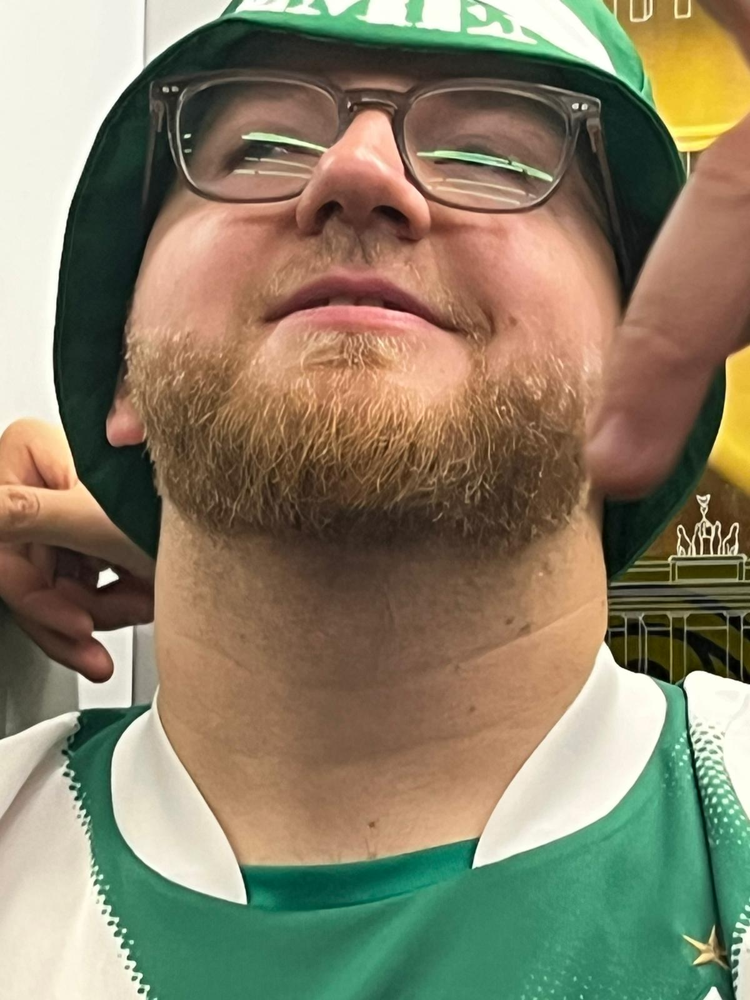
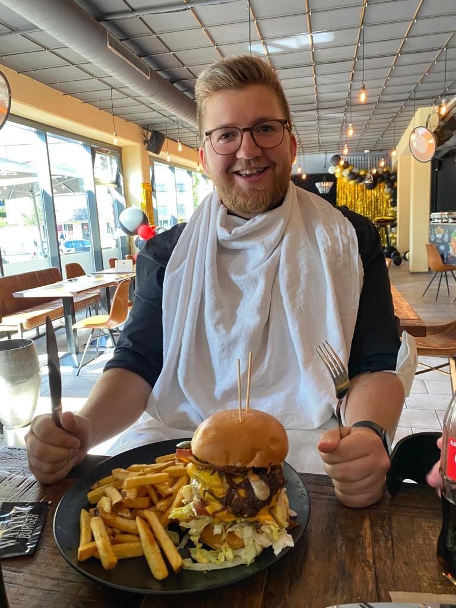
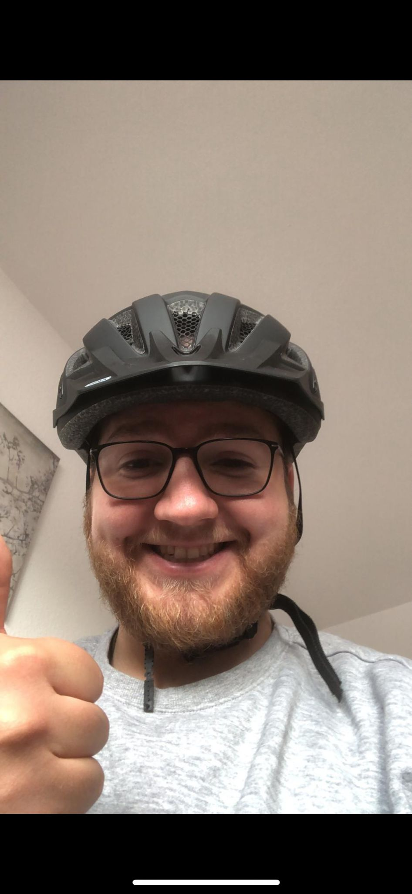

Es ist tatsächlich wieder passiert.
Nico wird 32.
Wir haben Fragen.
Seit 1994 im Betrieb. Die Garantie ist abgelaufen, ein Ersatzmodell wurde bislang nicht angekündigt.
Baujahr 1994Update 32.0Lage unverändert fragwürdig
Die Aktenlage
Drei Fotos. Mehr Fragen als Antworten.



Redaktioneller Kommentar · nicht unabhängig
„Mit 32 ist man nicht alt. Man fängt nur an, Geräusche beim Aufstehen zu machen.“
Kommentar 1 von 12
Genug gelästert
Alles Gute,
Nico.
32 Jahre. Trotz aller Umstände hast du es bis hierhin geschafft. Wir sind gleichermaßen beeindruckt und überrascht.
Hab einen richtig guten Geburtstag, du alter Sack.